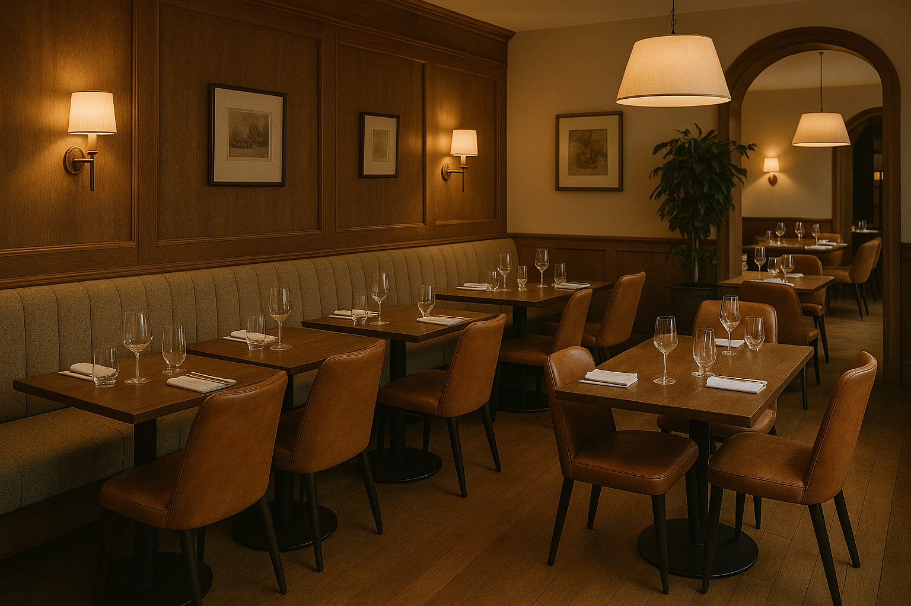

Since 2002, KC’s Restaurant has been more than just a place to dine it’s a destination where passion meets flavor. Rooted in tradition yet inspired by innovation, we bring together the finest seasonal ingredients, world-class techniques, and warm hospitality to craft unforgettable experiences. From intimate dinners to celebratory gatherings, KC’s has been serving excellence on every plate for over two decades.
At KC’s Restaurant, every detail is designed to delight the senses from the elegant ambiance and curated wine list to the artistry behind each dish. Our team of dedicated chefs and staff share one vision: to create a dining experience that feels both personal and extraordinary. Whether you’re discovering us for the first time or returning as part of our extended family, we invite you to savor not just a meal, but a story of passion, craftsmanship, and hospitality.
